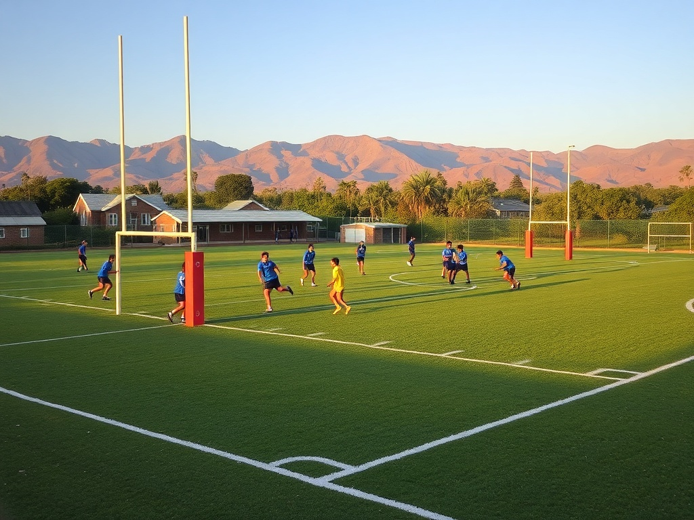
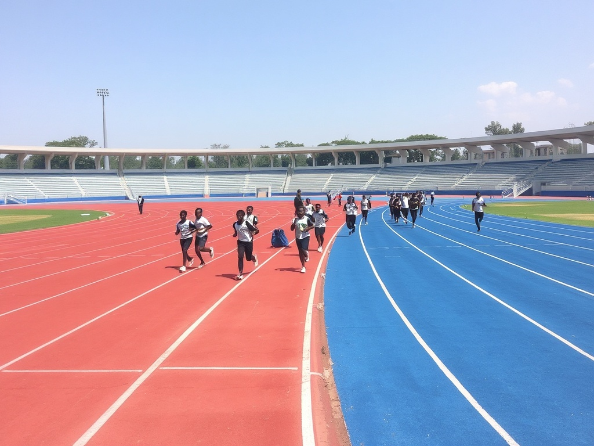

Kajiz the Tycoons
Discipline, Excellence & Innovation
Muthambi Subcounty | Premier Boys Boarding School
Today: Tuesday, 19 May 2026
7:30 AM - 8:00 AM
8:00 AM - 9:30 AM
10:00 AM - 11:30 AM
12:30 PM - 1:30 PM
3:30 PM - 5:00 PM
World-class facilities designed to support academic excellence and student development. Click the buttons below to explore detailed information.
Modern residential facilities with comfortable accommodation for all students
View All 8 DormitoriesState-of-the-art computer lab with modern equipment and internet connectivity
Computer Lab DetailsPhysics, Chemistry, and Biology labs fully equipped for practical learning
Science Labs DetailsComfortable residential facilities for dedicated faculty members
Teachers' Quarters Map200+
Computers
8
Dormitories
15+
Clubs & Societies
30+
Teachers
1000+
Students
Dedicated professionals leading Kajiunduthi to excellence
Principal
Leading with vision and integrity, dedicated to academic excellence and student development
Phone: +254 712 891 234
Email: principal@kajiz.ac.ke
Deputy Principal
Ensuring quality teaching and learning with focus on student welfare and discipline
Phone: +254 723 456 789
Email: deputyhead@kajiz.ac.ke
Dean of Students
Supporting student holistic development and maintaining campus discipline standards
Phone: +254 734 567 890
Email: dos@kajiz.ac.ke
Diverse programs that develop character, leadership, and excellence beyond the classroom
Competitive soccer program with interschool tournaments

High-contact team sport building discipline and teamwork
Theatrical productions and performance arts
Annual music and cultural celebration

Track and field events showcasing speed and endurance
Character building and outdoor adventure training
Developing critical thinking and public speaking
Technology and coding skills development
Start your journey to becoming a leader of discipline, excellence, and innovation. Join the Tycoons community.